Three Memory Schemes for Agents That Ship¶
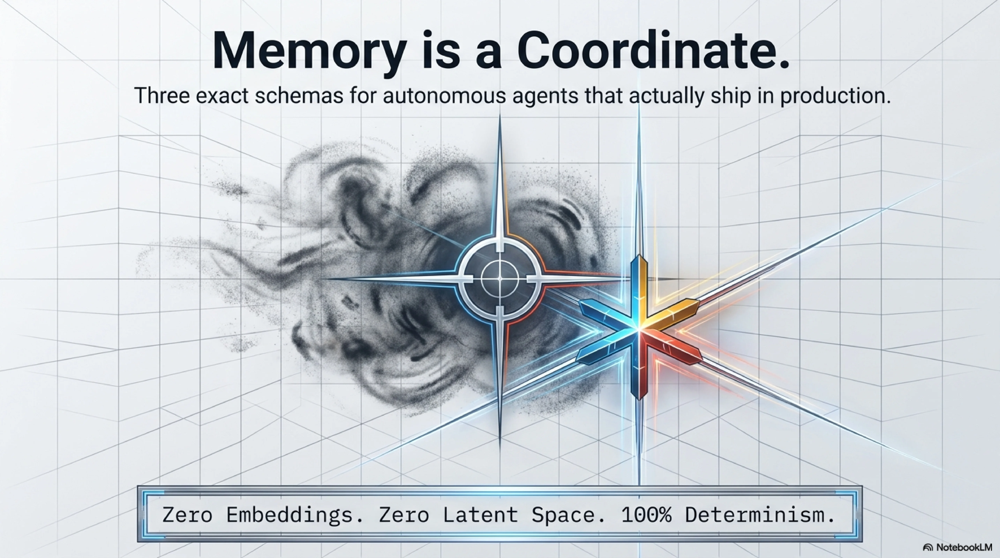
Every agent framework ships a memory module. Almost all of them work the same way: embed the interaction, store the vector, retrieve by similarity. It works for demos. It does not survive contact with production — where "the agent remembered the wrong thing" is a bug report, not a philosophy seminar.
We have been shipping agents for six months across three codebases — kcp-memory (a session-indexing daemon), Synthesis (a codebase-aware semantic index and MCP server), and kcp-agent (a deterministic knowledge navigator). Each one needed memory. Each one built it independently, for different reasons, with different schemas. None of them use embeddings.
That is not a coincidence. It is a pattern worth examining.
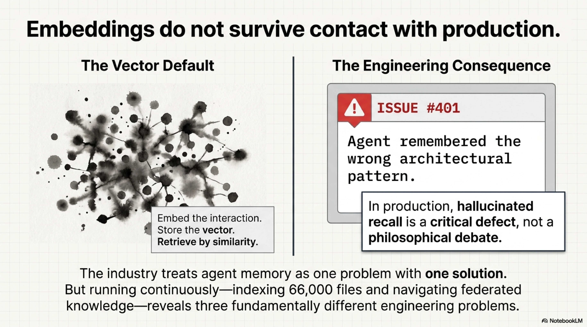
The taxonomy nobody writes down¶
The industry treats agent memory as one problem with one solution: store past interactions, retrieve relevant ones. But when you build systems that run continuously — indexing 66,000 files across ten workspaces, navigating federated knowledge estates, replaying grounded answers against a world that moved — you discover there are three fundamentally different memory problems.
| Session memory | Semantic memory | Claim memory | |
|---|---|---|---|
| Stores | What happened | What exists | What was concluded |
| Question it answers | "What did the agent do last Tuesday?" | "Where is the compliance policy?" | "Is this answer still true?" |
| Schema | Append-only transcripts | Live-indexed files + graphs | Hash-pinned, byte-stripped artifacts |
| Recall mechanism | Full-text search (FTS5) | Structural + semantic search (Lucene) | Task-term overlap + replay verification |
| Trust model | Inherent — it happened | Continuous — it's current | Self-distrusting — prove it |
| Staleness | Never stale | Never stale by design | Provably detectable |
Each row is a different system we built. Let's walk them.
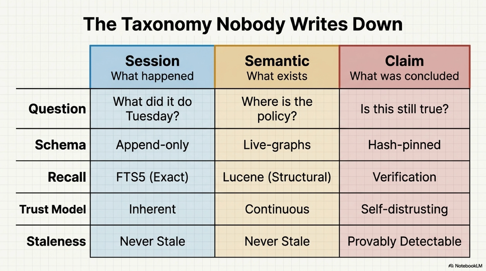
Scheme 1: Session memory — what happened¶
Ships in: kcp-memory v0.29.0
An agent that cannot recall what it did yesterday is not forgetful. It is amnesiac in a way that has engineering consequences: it re-discovers the same codebase patterns, re-makes the same architectural decisions, re-asks the same diagnostic questions. The cost is not just wasted tokens — it is lost institutional knowledge.
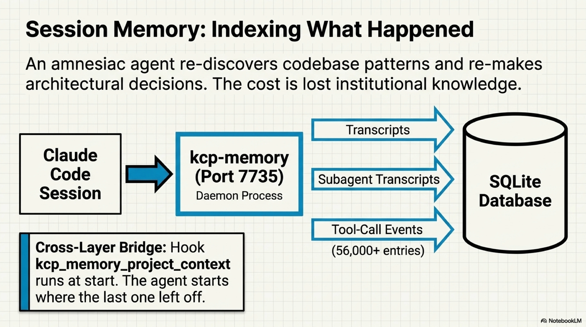
kcp-memory is a daemon (Java, runs as a systemd service on port 7735) that indexes Claude Code session transcripts into SQLite with FTS5 full-text search. It processes:
- Session transcripts — the raw user/assistant/tool exchanges, searchable by keyword
- Subagent transcripts — Task-tool delegations, where the detailed reasoning often lives (the parent transcript says "I delegated this"; the subagent transcript says what actually happened)
- Tool-call events — 56,000+ entries in
events.jsonl, each with session ID, command, timestamp, and output preview
The recall interface is deliberate:
kcp_memory_search("OAuth implementation")
→ 3 sessions where OAuth was discussed, with dates, project dirs, turn counts
kcp_memory_session_detail("5ecc3ebc")
→ Full transcript: user messages, files touched, tools used
kcp_memory_events_search("kubectl apply")
→ Every time that command was run, across all sessions, with context
kcp_memory_subagent_search("Flyway migration")
→ Finds the architectural discovery buried in a delegated agent's work
Why not embeddings¶
The transcript is the truth. A session either discussed OAuth or it did not — FTS5 gives an exact answer. An embedding gives an approximate answer to an exact question. When a developer asks "did we already solve this?", approximate is the wrong answer category.
The harder reason: session memory is historical. It is never stale, because history does not change. A session from March 4th will always be a session from March 4th. The trust model is inherent — there is nothing to verify, nothing to re-check, nothing to doubt. This is the one memory layer where recall can be unconditional.
The cross-layer bridge¶
At session start, a hook calls kcp_memory_project_context — surfacing what was done in this project directory recently. The agent starts where the last one left off, not from scratch. Session memory feeds the other layers too: synthesis reflect (a stop hook) distills session patterns into procedural skills. Memory becomes method.
Scheme 2: Semantic memory — what exists¶
Ships in: Synthesis v1.37+
An agent that can recall what it did but not what is — what files exist, how they relate, which ones changed, which ones contradict each other — is a historian without a map. Session memory tells you the agent navigated the compliance policy last week. Semantic memory tells you where the compliance policy is right now, what depends on it, and whether it drifted since last week.
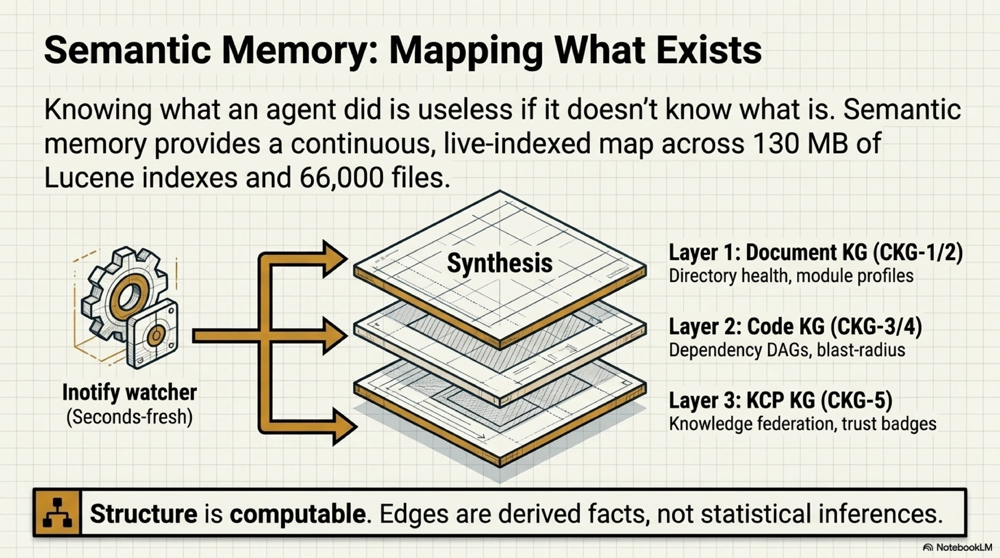
Synthesis is a Java-based MCP server that maintains live indexes across workspaces: Lucene for full-text, directory centroids for structural search, and three layers of knowledge graph:
- Document KG (CKG-1/2) — directory health, module profiles, cross-directory relationships
- Code KG (CKG-3/4) — dependency DAGs, import graphs, blast-radius analysis
- KCP KG (CKG-5) — knowledge units, federation edges, trust badges
Inotify watchers keep the index seconds-fresh across ten workspaces (66,000 files, 130 MB of Lucene indexes). The trust model is continuous re-indexing: if a file changes on disk, the index reflects it before the next query.
synthesis search "compliance policy"
→ Ranked files across all workspaces, by relevance and recency
synthesis relate src/customer/compliance/evaluators/complianceScoring.ts
→ Bidirectional: what it imports, what imports it, which tests cover it
synthesis impact database/migrations/V42__add_score_column.sql
→ Blast radius: 12 files in 3 modules would be affected
synthesis code-graph --module customer/compliance
→ The dependency DAG for the entire compliance module
The evidence engine (just shipped)¶
The latest Synthesis work — the v0.25 alignment epic, phases 1–4 — turns semantic memory into something new: an evidence engine for knowledge declarations.
The Knowledge Context Protocol defines an epistemic ordering for knowledge: rumored < declared < observed < verified. A manifest's fields are declarations — someone says "this file covers compliance policy, updated June 15th, sha256 is abc123." Those are claims. Synthesis is now the tool that checks them:
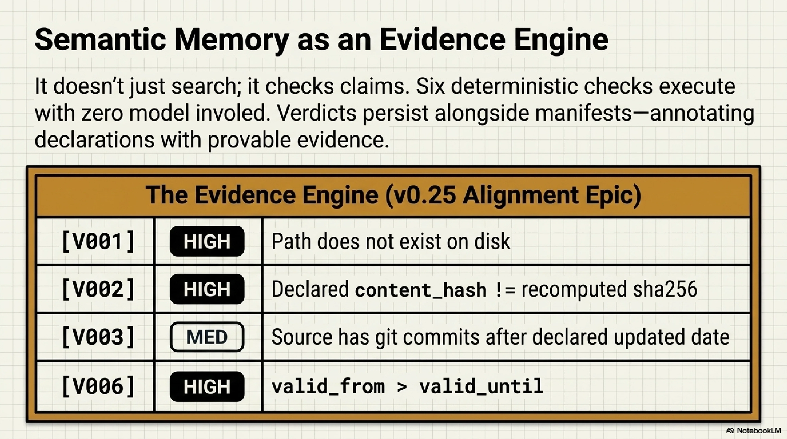
Six deterministic checks, no model involved:
| Check | Severity | What it catches |
|---|---|---|
| V001 | HIGH | Unit path does not exist on disk |
| V002 | HIGH | Declared content_hash does not match recomputed sha256 |
| V003 | MEDIUM | Source file has git commits after the declared updated date |
| V004 | LOW | A trigger matches neither a heading nor the content |
| V005 | HIGH | A relationship or supersession target does not resolve |
| V006 | HIGH | valid_from is after valid_until |
Each check produces a per-unit verdict: observed (declarations hold), stale (medium findings), or contradicted (high findings). The verdicts persist alongside the manifest's own verification_status — Synthesis never overwrites a declaration, it annotates it with evidence.
And on the generation side:
synthesis kcp init --batch /src/cantara
→ Scaffolds v0.25 manifests for every repo missing one
synthesis kcp refresh
→ Updates volatile fields (hashes, dates) while protecting hand-edits
This is what makes semantic memory more than search. It is a continuously updated, structurally aware evidence base — and now it can verify whether the knowledge that other agents consumed is still sound.
Why not embeddings¶
The same reason you don't embed a filesystem: the structure is computable. A dependency edge between two files is a fact derived from parsing imports — not a statistical inference from token proximity. A content hash either matches the file on disk or it does not. Directory centroids are computed from file metadata, not approximated from sampled vectors.
Lucene gives full-text search where it is useful. But the structural queries — relate, impact, code-graph, kcp verify — are graph traversals and hash comparisons. Embeddings would add latency and uncertainty to operations that are currently exact.
Scheme 3: Claim memory — what was concluded¶
Ships in: kcp-agent 0.8.0
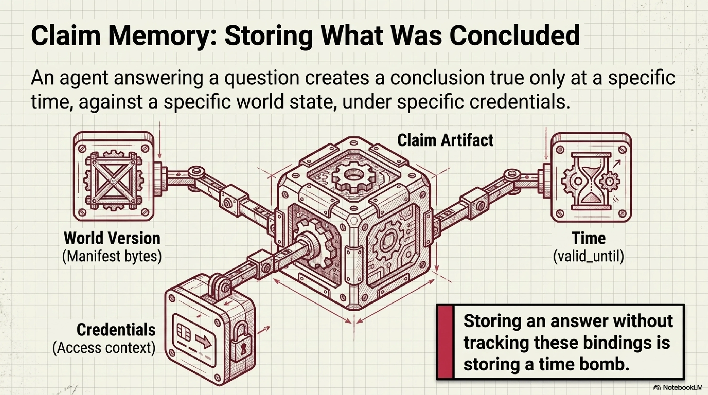
This is the scheme that has no industry precedent we know of.
Session memory stores what happened (unconditionally true). Semantic memory stores what exists (continuously verified). But an agent that answers questions — that navigates knowledge, synthesizes it, and produces conclusions — creates a third kind of artifact: a claim that was true at a specific time, against a specific version of the world, under specific credentials.
"The compliance score is 73%, based on the maturity assessment updated June 15th." That statement has three moving parts: the score could change, the assessment could be updated, and the credential that accessed it could expire. A memory system that stores the statement without tracking those bindings is storing a time bomb.
kcp-agent 0.8.0 stores grounded answers as hash-pinned, byte-stripped artifacts:
// memory.ts — the thesis in code
// A memory entry is NOT a summary or an embedding — it is the
// plan/grounded-answer artifact itself, stripped of the one thing
// that would make it dangerous to keep: the unit bytes.
export interface MemoryEntry {
id: string; // sha256 of the content-stripped artifact
kind: MemoryKind; // "plan" | "grounded-answer"
task: string; // the recall matching key
manifestSha?: string; // pinned to this version of the world
optionsKey?: string; // capability digest — different creds = different plan
recordedAt: string;
artifact: unknown; // the replay skeleton, never the source bytes
}
Byte-stripping: the access gate you can't cache around¶
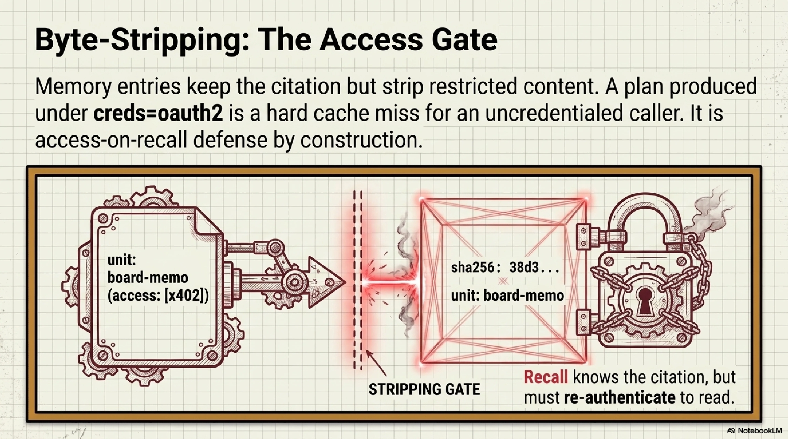
The most important line in the memory module:
// Caching restricted or paid content in the memory log would let a
// later recall read it without re-passing the access gate. We keep
// only what replay needs — id, path, sha256, and the citation table.
When a grounded answer cites a restricted unit — say, a board memo marked access: [x402] that costs money to read — the memory entry keeps the citation (unit: "board-memo", sha256: "38d3...") but strips the content. A later recall knows the answer referenced the board memo. It cannot read the board memo without paying again.
The red-team test makes this concrete:
// red-team: the confidential content never enters the log
const e = toEntry(restrictedEpisode(), AT);
const json = JSON.stringify(e.artifact);
expect(json).not.toContain("BOARD-CONFIDENTIAL");
expect(json).not.toContain("4.2B USD");
expect(json).not.toMatch(/"content"/);
Recall is replay¶
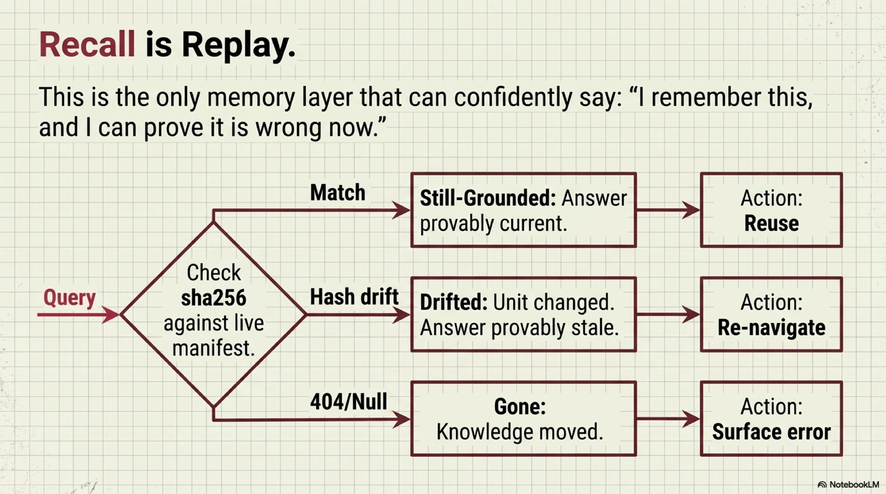
When you recall a prior episode, kcp-agent does not return it and hope it is still good. It re-verifies every citation against the live manifest:
export async function recall(store, task, opts) {
const scored = (await store.list())
.filter(verifyEntry) // tampered episode → refused, not recalled
.map((entry) => ({
entry,
score: terms(entry.task).filter(t => query.has(t)).length,
}))
.filter(h => h.score > 0)
.sort((a, b) => b.score - a.score);
// Each hit is replayed: still-grounded / drifted / gone
for (const hit of scored) {
hit.status = await opts.replay?.(hit.entry) ?? "unverifiable";
}
return scored;
}
Three possible outcomes:
still-grounded— every cited unit's sha256 still matches. The answer is provably current. Reuse it.drifted— at least one unit changed. The answer is provably stale. Re-navigate.gone— a cited unit no longer exists. The knowledge moved. Surface it.
This is the property that makes claim memory different from the other two: it is the only layer that can say "I remember this, and I can prove it's wrong now."
Determinism-preserving reuse¶
A plan is a pure function of (manifest bytes, task, options). So an episode is safe to reuse — without calling the model — only when it matches on all coordinates and still replays clean:
// reuse.ts — fail-closed on any drift or doubt
const candidates = (await store.list()).filter(
(e) =>
verifyEntry(e) && // integrity
e.task === req.task && // same question
e.manifestSource === req.manifestSource && // same knowledge
sameOptions(e.optionsKey, req.optionsKey), // same credentials
);
An answer produced under creds=oauth2 is a cache miss for an uncredentialed caller. Different capabilities, different plan — even if the task and manifest are identical. This is not an edge case. It is the access-on-recall attack surface, defended by construction.
MCP session dedup¶
The caller-side of claim memory is simpler but high-leverage. When an MCP client calls kcp_load twice in the same working session, the second call declares what it already holds:
// session.ts — the server stays stateless
export function dedupeLoaded(loaded: LoadedUnit[], known?: KnownUnits): DedupResult {
for (const u of loaded) {
if (have.get(u.id) === u.sha256) {
// Exact sha match → stub instead of re-serving bytes
units.push({ id: u.id, sha256: u.sha256, unchanged: true });
bytesSaved += u.content?.length ?? 0;
} else {
units.push(u); // Changed or unknown → serve the bytes
}
}
}
A stub is only emitted on an exact sha match. If the unit drifted, the fresh bytes are re-served — "unchanged" is a literal assertion, never a shortcut that hides a change.
Why not embeddings¶
Because a sha256 either matches or it does not. "Approximately still valid" is not a category that exists in claim verification. The recall mechanism uses lexical term overlap from the planner's own tokenizer — not because it is sophisticated, but because it is deterministic and debuggable. When a recall matches incorrectly, you can print the term sets and see why. When an embedding matches incorrectly, you can print the vectors and see nothing.
The convergence¶
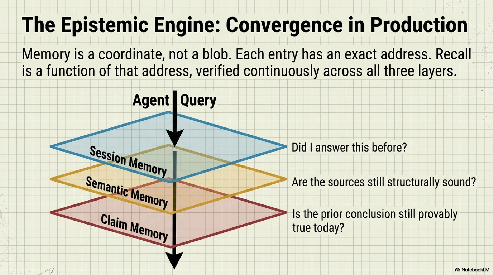
Three independent systems, three different schemas, one shared principle: memory is a coordinate, not a blob. Each entry in each scheme has an address — a session ID, a file path, a content hash — and recall is a function of that address, not a nearest-neighbour search through a latent space.
But the deeper convergence is in how the three layers connect:
┌─────────────────────────────────────────────────┐
│ Agent session │
│ │
│ "What's the compliance status for Org X?" │
└────────┬────────────────────┬────────────────────┘
│ │
┌────▼─────┐ ┌────▼──────┐
│ Session │ │ Semantic │
│ memory │ │ memory │
│ │ │ │
│ "We ran │ │ The score │
│ this │ │ lives at │
│ last │ │ this path,│
│ Tuesday" │ │ depends │
│ │ │ on these │
│ │ │ 4 files" │
└────┬─────┘ └─────┬─────┘
│ │
│ ┌─────────────┐ │
└──► Claim memory◄───┘
│ │
│ "The answer │
│ was 73%, │
│ pinned to │
│ sha 4f2a. │
│ That sha │
│ drifted." │
└─────────────┘
Session memory tells you the agent answered this question before. Semantic memory tells you where the source material lives and what changed. Claim memory tells you whether the prior answer is still defensible — and if not, exactly which citation broke.
Synthesis's new kcp verify command closes the loop from the other direction: it checks whether the knowledge that a claim was grounded against is still structurally sound — content hash match, git freshness, referential integrity. The evidence engine validates the evidence.
The embedding-shaped hole¶
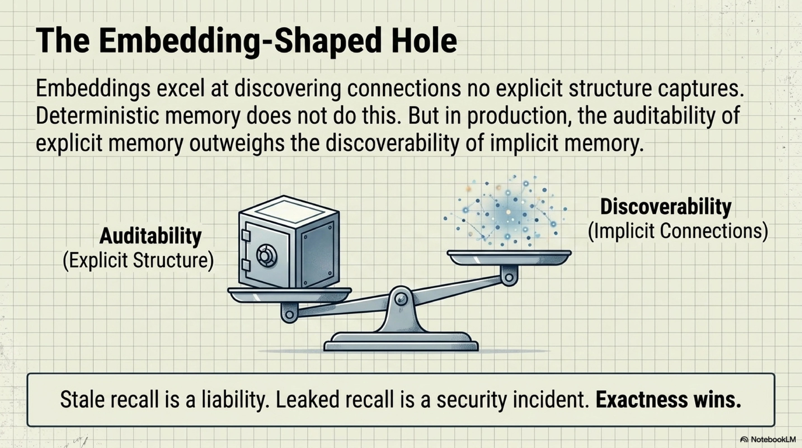
We should be honest about what we are not claiming. Embeddings are good at one thing none of these schemes attempt: discovering connections that no explicit structure captures. A developer asking "anything like the retry pattern I used last month?" — when the retry pattern was never tagged, indexed, or declared — will not be found by FTS5, Lucene, or term overlap. It will be found by an embedding that noticed the code structure rhymes.
We don't have that. What we have instead is explicit structure: skills that encode patterns (528 YAML files in the procedural layer), knowledge graphs that map relationships (CKG-1 through CKG-5), and manifests that declare what knowledge means.
The bet is that in production — where a wrong recall is a bug, a stale recall is a liability, and a leaked recall is a security incident — the auditability of explicit memory outweighs the discoverability of implicit memory. The systems that run on these three schemes have been in daily use for six months. The evidence so far supports the bet.
What ships where¶
| Scheme | System | Latest | What just landed |
|---|---|---|---|
| Session | kcp-memory | v0.29.0 | Subagent transcript indexing, Slack dispatch notifications, session tree navigation |
| Semantic | Synthesis | v1.37.2 | KCP v0.25 evidence engine: verify + gaps + init --batch + refresh (epic #361 phases 1–4) |
| Claim | kcp-agent | 0.8.0 | Episodic memory epic: remember/recall, memory-validated reuse, MCP session dedup, red-team battery |
All three are open source. All three run in production today. All three are MCP servers, which means any MCP-capable agent can borrow them — you don't have to adopt the architecture to use the memory.
# Session memory
claude mcp add kcp-memory -- java -jar ~/.kcp/kcp-memory-daemon.jar --serve
# Semantic memory
claude mcp add synthesis -- synthesis mcp
# Claim memory (comes with the planner)
claude mcp add kcp -- npx -y kcp-agent mcp
Three claude mcp add commands. Three memory layers. Zero embeddings.
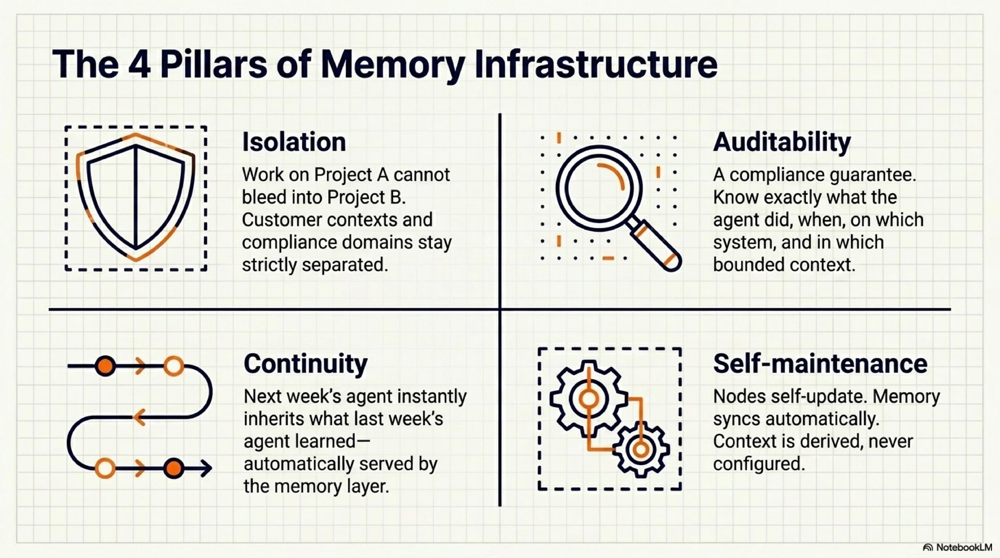
The previous post gave five agents an enterprise estate. This one gave them a memory — or rather, three memories, each honest about exactly what it knows and what it doesn't. Next: what happens when two agents share a memory across an organisational boundary.
Series: Knowledge Context Protocol
← The Milky Way: An Enterprise Documentation Estate the Agent Can Defend · Part 44 of 50 · Prompt Injection Is SQL Injection for Agents. Here's the Prepared Statement. →